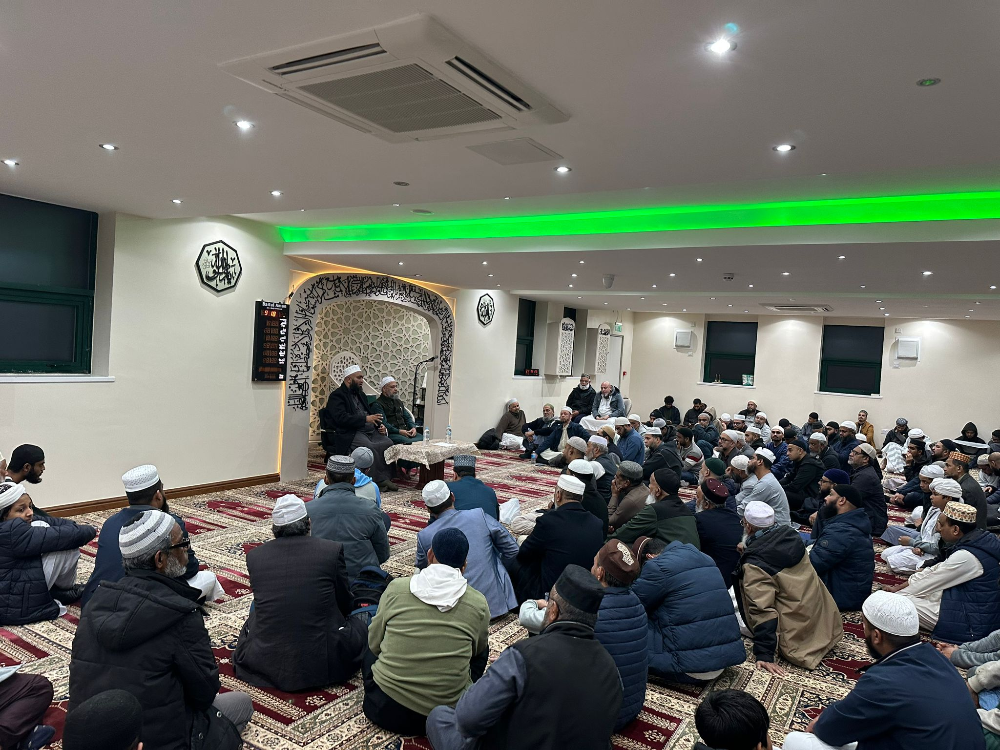
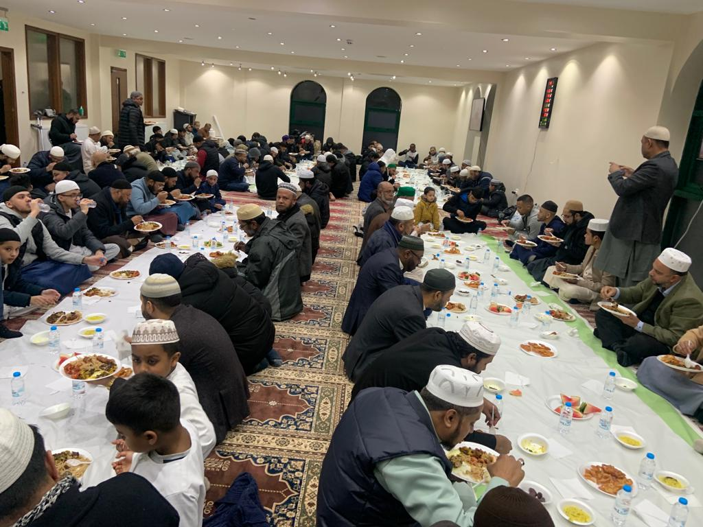
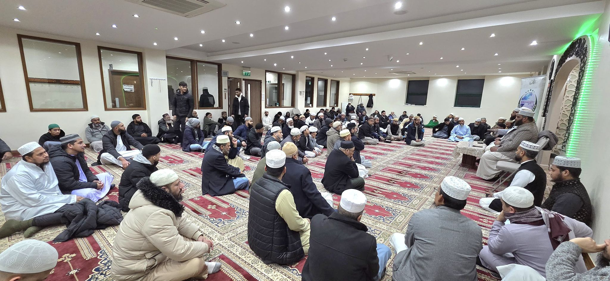
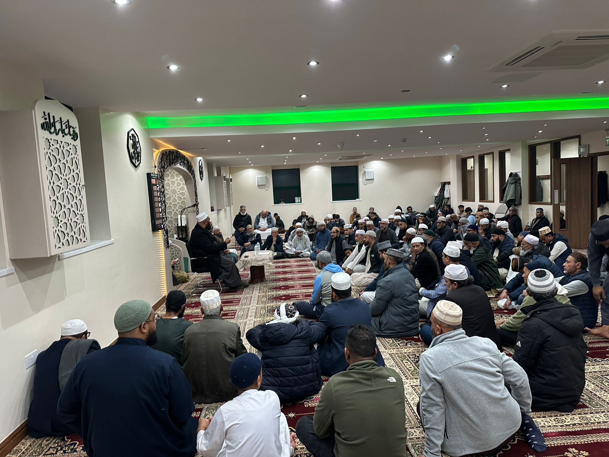

Wudu facilities
Wudu facilities are available for worshippers and visitors.
BRADFORD · OVER 40 YEARS OF SERVICE
Serving the Bangladeshi and wider local community, in the heart of Bradford.
AT THE MASJID TODAY
ROOTED IN FAITH. OPEN TO ALL.
For over 40 years, Baitul Aman Jame Masjid has been a place to worship, learn and support one another.
A WEEKLY OPPORTUNITY TO LEARN
Learn correct recitation through group recital practice and Tajweed rules.
Organised by Baitul Aman Jame Masjid and Anjumane Al Islah, Bradford.
FAITH IN COMMUNITY
Baitul Aman Masjid regularly hosts activities and services organised by Anjumane al Islah, founded by Allama Abdul Latif Chowdhury Fultali.
Learn about our community →VISIT THE MASJID
6 Maudsley Street
Bradford, West Yorkshire
BD3 9JT
PLAN YOUR VISIT
Facilities to support worshippers and visitors during their time at the masjid.
Wudu facilities are available for worshippers and visitors.
Parking is available for those visiting the masjid.
Wheelchair-accessible parking is available for visitors with mobility needs.
Accessible wudu facilities are available for wheelchair users.
Toilet facilities are available for worshippers and visitors.
An accessible toilet is available for wheelchair users.
The prayer hall is accessible to wheelchair users.
OUR COMMUNITY TOGETHER






